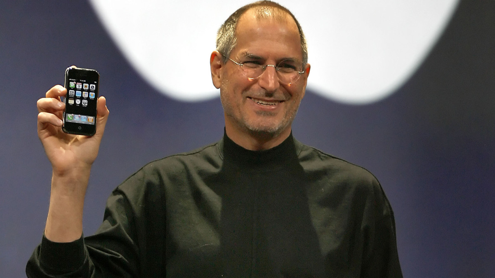

Bill Gates

William Henry Gates III‚ also known as Bill Gates (Born October 25‚ 1955) is an American entrepreneur and computer programmer who co-founded
Microsoft‚ the world’s largest personal software company. Ever since Gates was a kid‚
he was interested in softwares and wrote his first one in high school at the age of 13. In 1975, when Gates was a sophomore at Harvard University,
he started to develop a software with his hometown friend Paul G. Allen. After some time‚ due to the great
success of this project, Gates left Harvard and formed Microsoft with Allen. Due to the great success of Microsoft, Gates made a fortune as he was the company’s largest
individual shareholder. He became a billionaire in 1986, and reached tens of billions of dollars in a decade‚ making him one of the richest people in the world at the time.
In addition to his business success, Gates is also known for his charitable work. At first, Gates preferred staying out of the public eye, but as Microsoft’s power and
reputation grew,and especially after it grabbed the attention of U.S. Justice Department's antitrust division, Gates become a public
figure with some hesitation. In 1994, he launched the William H. Gates Foundation (which was renamed the Bill and Melinda Gates
Foundation) along with his wife at the time Melinda Gates. The foundation was to fund global health
problems‚ along with projects in the Pacific Northwest. In the late 1990's‚ the couple also funded
North American Libraries through the Gates Library Foundation, and raised money for minority study grants. In 2014, Gates stepped down as chairman but remained as a board member
until 2020. One of Gates' most famous quotes is one he wrote in the best seller book, The Road Ahead‚“Success is a lousy teacher. It seduces smart people into thinking they can’t
lose.”
Elon Musk
Elon Musk (Born June 28‚ 1971 in Pretoria, South Africa) is an American entrepreneur who is the CEO of Tesla‚ co-founder of
Paypal‚ and founder of SpaceX. Ever since Musk was a kid‚ he showed
interest in computers and entrepreneurship. At 12 years of age‚ he created a video game and sold it to a computer magazine. After receiving a Canadian passport in 1988‚ Musk moved
to Canada, where he attended Queen's University. In 1992,
he transferred to the University of Pennsylvania‚ and in 1997, he received bachelor's degrees in both economics
and physics. Musk founded Zip2‚ which is a company that provides maps and business directories to online newspapers. This company was
bought in 1999 for $307 million by the computer manufacturer Compaq. After selling this company‚ Musk founded the online financial
services company X.com‚ which was later converted to PayPal‚ which is a website to transfer money online. In October 2002‚ the online auction eBay
purchased PayPal for $2.5 million. Elon was convinced that the longevity of humanity could be ensured if they became a multiplanet species. Unfortunately‚ rocket launchers were very
expensive‚ and this started to limit Musk's hopes. To reassure himself‚ he founded Space Exploration Technologies (SpaceX) in 2002‚ in order to make affordable rockets.
After some time of SpaceX’s launch‚ their rockets and overall products were a lot cheaper and more effective compared to the rockets of competitor companies. Some of their most
successful and famous rockets were the Falcon 9, Falcon 1, Falcon Heavy, and Dragon.
Along with this‚ Musk had been interested in electric cars‚ and in 2004, he was a major funder of Tesla(an electric car company founded by Martin Eberhard and Marc Tarpenning.
In 2006, Tesla released their first electric car‚ the Roadster‚ which was something totally new. The sports car could go from 0-60 miles
(97 km) per hour in less than 4 seconds. In 2010‚ the company raised $226 million due to it's initial public offering. After the release of the Roadster, the company continued to release
masterpieces which caused their reputation to skyrocket along with their fame.
Jeff Bezos

Jeffery Preston Bezos‚ also known as Jeff Bezos (Born on January 12‚ 1964) is an American entrepreneur who is the founder and current executive chair of Amazon‚ the famous e-commerce site. Under the guidance
of Bezos‚ Amazon turned into the largest retailer on the World Wide Web. In high school Bezos created a centre that encouraged creative thinking in young children‚ which was called the Dream Institute.
In 1986, after graduating and receiving degrees in electrical engineering and computer science from Princeton University‚ he worked many jobs before joining the New York Investment Bank in 1990. After
a short time‚ Bezos was named the senior vice president‚ and was in charge of examining the investment opportunities of the internet. In 1994‚ he quit the job and moved to Seattle‚ Washington‚
where he opened his virtual book store. The name of the store was Amazon, which was named after the South American River. After a couple of years‚ Amazon became one of the leading companies in e-commerce.
In 1998, it started selling CD’s and videos. Many retailers were inspired by the success of Amazon‚ and made their own online stores. As competition was increasing‚ Bezos decided to
step up the game. He began to make Amazon more diverse‚ allowing customers to make a lot more purchases. From 2002-2010‚ Amazon added consumer electronics‚ apparel‚ hardware‚
Amazon Web Services‚ Kindle (digital book reader)‚ and the Amazon Studio Division. Due to these changes‚ the sales went from $510‚000 to $600 million in 3 years‚ and jumped to
$233 billion in 2018. 2 years later‚ when the world got hit by the COVID-19 pandemic‚ Amazon registered record profits‚ due to the sudden increase in online shopping. They were able
to achieve $100 billion that year. In 2021‚ Bezos announced that he would be stepping down as CEO‚ but remained at Amazon as an executive chairman. Other than Amazon‚ Bezos founded a Blue Origin
(a spaceflight company) in 2000. After buying a launch site in Texas‚ Blue Origin announced that they will be introducing New Glenn (a crewed suborbital spacecraft) in 2020. In 2018‚ his net worth
was calculated at $112 billion‚ making him the richest person in the world.
Steve Jobs

Steven Paul Jobs‚ also known as Steve Jobs (Born February 24‚ 1955‚ died on October 5‚ 2011) was an American business magnate‚ who co-founded Apple along with Ronald Wayne
and Steve Wozniak. Jobs was a essential pioneer of the personal computer era. Jobs was raised by adoptive parents in Silicon Valley. After returning back to Silicon Valley from India in 1974‚ he
reconnected with his high school friend‚ Steve Wozniak‚ who was working for the Hewlett-Packard Company. After listening to Wozniak’s plans of designing his own computer board‚
Jobs suggested that they should go into business together‚ and that’s what ended up happening. One of their first pieces of work was the Apple I‚ a computer that both men build in April
of 1976. The computer was built in Jobs’ garage‚ with money they acquired by selling Jobs’ Volkswagen Minibus and Wozniak’s programmable calculator. Jobs was one of the first entrepreneurs
to understand that the personal computer would be a game changer in the market. With his encouragement‚ Wozniak designed the Apple II‚ an upgraded version of Apple I. The new and improved computer
was a great success‚ spiking the boom in personal computers. Apple had a record-setting public stock offering‚ and in 1983‚ it made the fastest entrance (to that time) into the Fortune 500
list of America’s top companies. This was a huge accomplishment considering they only started the business 6 years prior to that. During the same year‚ the company recruited John Sculley (President
of PepsiCo,Inc) to become the chief executive officer (CEO) for Apple‚ along with being Jobs‚ mentor in the overall idea of “How to run a large corporation.” A year later‚ Jobs
introduced the Macintosh‚ or Mac in a skilfully choreographed demonstration. Later on‚ it was referred to as the archetype of event marketing. Unfortunately‚ at that time‚ the company
faced disappointing sales due to the first Macs being underpowered and expensive. Due to Jobs’ failure‚ tensions in the company increased‚ and Sculley (the CEO) convinced Apple’s
board of directors to remove him from the company. Despite these hard times‚ Jobs started NeXT Inc.‚ and which designed powerful workstation computers for the education market. He did have some
solid funders‚ including Ross Perot and Canon Inc.(a Japanese electronics company). In the early 1990’s‚ Jobs focused the company’s attention
towards NEXTSTEP‚ their innovative software system. Additionally‚ in 1986‚ Jobs started to take interest in Pixar (a computer graphics firm). Over the years‚
Jobs made Pixar a successful animation studio‚ and in 1995‚ they produced their first ever computer animated film‚ Toy Story. Due to this achievement‚ Pixar’s public stock offering
increased‚ making Jobs a billionaire for the first time. Eventually‚ he sold Pixar to the Disney Company in 2006. In late 1996‚ Apple suffered huge financial losses‚ and hired
a new chief executive‚ semiconductor executive Gilbert Amelio. Since Amelio was struggling to find a replacement for the aging operating system of the Mac‚ he chose NEXTSTEP. He proceeded to
buy Jobs’ company for $400 million‚ along with bringing Jobs back to Apple as a consultant. After some time‚ the board of directors were unhappy with the work of Amelio‚ and requestedJobs to return as the CEO of the company. As soon as Jobs got back to his roots‚ he
turned everything around. He promptly formed a partnership with Apple’s former adversary‚ Microsoft Corporation‚ cancelled Amelio’s Mac-clone agreements‚ and simplified the company’s product line. Despite temptations‚ he resisted from making machines that ran Microsoft’s Windows OS. He
believed that Apple was in a unique position to innovate. In 1998‚ he introduced the iMac(a computer)‚ which was a total game changer. By the end of the year‚ it was the nation’s
highest-selling personal computer‚ and Jobs was able to proudly announce consistent profits‚ and overall success of the company. Along with the iMac‚ the company also released the iBook a year
later‚ which was also a great success. At the end of the day‚ Jobs was able to save Apple from collapsing. In 2001‚ Jobs wanted to get ahead of the game. He started to “re-invent”
Apple for the 21st century. Coincidentally‚ that was the year iTunes (a computer program for playing music and for converting music to the MP3 digital format) was introduced. Later that same year‚
the iPod (a portable MP3 player) was introduced and rapidly became the market leader. Additionally‚ they started to sell downloadable copies of major record company songs in MP3 format over the Internet.
The Apple iTunes store had sold more than 1 billion songs and videos by 2006. In 2007‚ with the introduction of the iPhone (a mobile telephone)‚ Apple had entered the telecommunications business. Later
that year‚ Apple introduced the iPod Touch (a portable gaming and MP3) device. Before Jobs’ death in 2011 due to pancreatic cancer‚ he was able to prove himself despite his ups and downs‚
and is known as one of the most successful businessmen the world has ever seen.
Mark Zuckerberg
Mark Elliot Zuckerberg‚ also known as Mark Zuckerberg‚ (Born May 14‚ 1984) is an American media magnate and internet entrepreneur‚ along with being the cofounder and CEO of Facebook (a social media
platform). In 2004‚ 2 years after Zuckerberg enrolled in Harvard University‚ he launched thefacebook.com‚ which was later renamed to Facebook in 2005. It was originally a platform
used by Harvard students‚ who uploaded their information and photos‚ based on the template and style that Zuckerberg had some up with. With the word spreading‚ Facebook gained more attention
which caused many people posted pictures on it‚ and used it to stay in touch with their friends. Dustin Moskovitz and Chris Hughes (Zuckerberg’s roommates and co-founders of Facebook) played a huge part in the development
of the platform. They added features to assist other campuses in accessing the website. One of the features of Facebook was the ‘social graph’‚ which allowed information of people to travel to
friends of friends. In the summer of 2004‚ the 3 roommates shifted the headquarters to Palo Alto‚ California where Peter Thiel (venture capitalist) was convinced by Zuckerberg to give the company seed money.
Zuckerberg proceeded to drop out of University in order to focus on the company. He proceeded to become the CEO and president of the company. In May of 2005‚ the company received their first chunk of venture capital ($12.7 million)
from Thiel. Highschool students had access to Facebook and were able to make accounts and utilize the website four months later. By September 2006‚ Facebook made it available for anyone with an email address to sign up and make an
account. At that time‚ Yahoo! offered Zuckerberg $1.6 billion to buy Facebook‚ but were declined. However‚ in 2007‚ Facebook made a deal with Microsoft‚ in which Microsoft payed $240 million
for a 1.6% equity in the company and 2 years later‚ they received $200 million for 1.96% equity by Digital Sky Technologies. A year later‚ Zuckerberg’s net worth was calculated to be $1.5 billion. Currently‚
as a 37 year old man‚ Zuckerberg’s net worth is about $72.8 billion‚ making him one of the most successful young businessmen we have ever seen.
Return to the top of the page
Return to home
Visit the fun facts page
View the sources